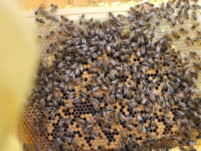

A Year in the Apiary - June Beekeeping Tasks (UK)
June is a peak month for many UK beekeepers. Colonies are often at their strongest, nectar flows can be excellent and swarming may still be a real risk. Your focus now is on managing the honey flow, keeping an eye on swarm activity and maintaining healthy, productive hives.
This page is part of the BeezKnees Year in the Apiary – monthly beekeeping calendar. It covers June beekeeping tasks in the UK: continuing swarm checks, managing supers and honey, monitoring health and varroa and keeping clear records during the busiest part of the season.
June at a Glance – Peak Season Focus
Bee Behaviour
- Strong foraging on main nectar flows
- Large brood nests and high bee populations
- Swarm pressure may still be significant
Key Jobs for the Beekeeper
- Regular inspections and swarm checks
- Managing supers and bee space
- Monitoring health, brood pattern and stores
Risks to Watch
- Missed queen cells and unexpected swarms
- Congestion in brood and supers
- Overlooking health issues during the rush of the honey flow
What Your Bees Are Doing in June

In June, colonies that came through spring strongly often reach their peak population. Large numbers of foragers leave the hive each day, and supers can fill quickly when weather and forage are favourable. In some areas, this is the main honey flow of the season.
At the same time, swarm impulse may still be present. Older queens or crowded colonies may continue to produce queen cells if you are not proactive about space and swarm control. Your job is to keep colonies productive while reducing the chance of losing swarms and honey.
Inspections and Swarm Checks in June

Many beekeepers continue inspections about every 7 days in June, particularly where swarm pressure remains high. Over time, you may find that some stable colonies need slightly less frequent checks, while others demand more attention.
- Confirm colonies are queenright – look for eggs and young brood.
- Assess brood pattern and strength – healthy, consistent brood is a good sign.
- Check closely for queen cells along frame edges, bottoms and the face of combs.
- Ensure there is adequate space for brood and for honey storage above.
- Watch for behavioural changes – unusual aggression or lethargy may signal problems.
Handling techniques, working with the smoker and general inspection skills are covered in more detail in the hive management guide.
Swarm Control – Still Important in June
Swarm control does not stop when May ends. In many apiaries, June can be just as busy, especially where weather delayed spring build-up or where late flows encourage further growth. Continuing to look for queen cells and applying your chosen swarm control methods calmly is essential.
- Stick with a small number of proven swarm control methods you understand.
- Keep spare boxes, floors and frames ready in case you need to split colonies or perform artificial swarms.
- Record exactly when queen cells were seen and what actions you took; this helps you interpret what you see at the next inspection.
If queen cells are missed and a swarm leaves, carefully assess the brood and remaining queen cells to understand what has happened. Good records make this process much easier.
Managing the Honey Flow and Supers
June is often when supers fill quickly. Managing supers well keeps bees working efficiently and helps you avoid congestion that can feed back into swarm pressure.
- Add extra supers when existing ones are well covered with bees and nectar is still coming in.
- Rearrange supers if needed so that partly filled combs are in convenient positions for the bees.
- Make notes on which supers were added when – this will help when deciding what to extract and when.
If you are approaching an early crop, such as oilseed rape, you may need to remove and extract honey before it granulates in the comb. Having the right equipment ready is discussed in the equipment guide.
Comb Replacement and Hive Layout
June is still a reasonable month to continue planned comb replacement and to tidy hive layouts. Strong colonies can handle a certain amount of change as long as it is done thoughtfully.
- Rotate out the oldest, darkest brood frames over time, replacing them with fresh comb.
- Check for damaged frames, broken lugs or warped boxes and plan repairs or replacements.
- Keep hive stands stable and level, making small adjustments if needed.
More detailed hygiene and equipment advice is available in the hygiene guide and equipment guide.
Disease Awareness and Varroa Monitoring
With large brood areas and heavy bee traffic, June is a key time to stay alert to health issues. Some problems become more obvious as colonies reach peak size, and varroa-related issues may begin to show as virus loads increase.
- Note any colonies with patchy brood, unusual odours or visible larval abnormalities.
- Watch for bees with deformed wings or other signs of virus.
- Use appropriate monitoring methods as part of your varroa management plan, and keep treatment records up to date.
The bee diseases overview and detailed pages on bacterial diseases, viral diseases and bee pests and parasites provide further guidance, while specific varroa treatment and monitoring advice is set out in the varroa management guide.
Record Keeping, HiveTag and Learning from June
June can feel intense. This is exactly when good records pay off. Clear, concise notes help you track which colonies needed swarm control, how quickly supers filled and which hives are performing best.
- Inspection dates, weather and main forage sources.
- Notes on queen cells, swarm control actions and outcomes.
- When supers were added, moved or removed and how quickly they filled.
- Any comb replacement, disease concerns or varroa observations and treatments.
Tools such as the HiveTag web app can make it easier to log this information consistently, especially when you have multiple hives or apiaries to manage.
Continued learning – through association meetings, study groups and trusted reading – also pays dividends. Revisiting the guides on getting started and honeybee behaviour can help you interpret what you see as colonies move into and through the main flow.
Forage and Helping Pollinators in June
June often offers abundant forage, with many trees, hedgerows and garden plants in bloom. Supporting this diversity benefits honey bees and a wide range of wild pollinators.
- Maintain flower-rich areas and avoid cutting everything back while it is still in full bloom.
- Provide a steady water source, especially during warmer spells.
- Limit or avoid insecticides and herbicides that can harm beneficial insects.
For more ideas on supporting bees and other pollinators, see the bee gardening guide and the wider Help the Bees section.
Emergency Scenarios – When Things Go Wrong in June
- Unexpected swarms leaving despite recent inspections, leaving weak or queenless colonies.
- Queens accidentally lost during manipulations or swarm control.
- Rapid changes in colony strength or brood pattern that suggest disease or serious queen problems.
When major issues arise, seek advice quickly – from experienced mentors, your local association or the National Bee Unit. The pages on bee diseases and bee stings and safety provide helpful background information to support safe, informed decisions.
June Beekeeping FAQ – UK Beekeepers
How often should I inspect hives in June?
Many beekeepers continue with inspections approximately every 7 days in June, especially where swarm pressure remains high. As things stabilise, you may adjust this slightly based on local conditions and colony behaviour.
Is swarm control still necessary in June?
Yes. Swarming can and does still occur in June in many UK apiaries. It is important to keep checking for queen cells and to apply your chosen swarm control methods consistently until swarm pressure has clearly dropped.
How do I manage supers during the June honey flow?
Watch how quickly supers are filling and add additional ones as needed so bees always have space to store nectar. Rearrange supers if necessary to keep combs in a sensible, workable order and note when you might be able to remove any early crop.
Can I harvest honey in June?
In some areas, an early crop such as oilseed rape or mixed spring honey may be ready in late May or June. Only extract honey that is fully capped and properly ripened, and make sure you have the equipment and storage space you need.
Should I still be replacing old brood frames in June?
Yes, planned, gradual replacement can continue as long as colonies remain strong. Avoid removing too much brood or stores at once and record which frames have been changed so you can track your comb rotation plan.
What disease signs should I look for in June?
Be alert for patchy or sunken brood, discoloured larvae, unpleasant smells, deformed wings and shrinking or failing colonies. These can signal a range of problems from foulbrood to varroa-related virus issues. Seek advice if you are unsure.
How does varroa monitoring fit into June?
June is a good month to note signs that might indicate high varroa levels and to use monitoring methods as part of your overall plan. Even if you are not treating immediately, information gathered now helps shape effective treatment later in the season.
What if a member of the public sees a swarm in June?
As earlier in the season, they should stay calm, keep children and pets away and contact a swarm collector rather than disturbing the bees. Direct them to the Report a Swarm page for clear, reliable guidance.
How can HiveTag help during the busy June period?
The HiveTag web app lets you log inspections, queen cells, supers, comb changes and any treatments in a structured way. That makes it easier to see patterns and review what happened when you look back at the season later.
Is June still a time to worry about starvation?
Starvation is less common in June than earlier in the year, but it can still happen if a major flow ends suddenly or weather keeps bees inside for several days. Continue to be aware of hive weight and the amount of stored food, especially in smaller or later-swarming colonies.
How does June link to July and later months?
June decisions around swarm control, supers and health shape the colonies you carry into July and August. This guide works best when read alongside the other Year in the Apiary pages so you can see how your tasks evolve across the full season.
Where can I learn more about related beekeeping topics?
Explore the main beekeeping guides on this site, including hive management, varroa management, bee diseases, hygiene and equipment, for a deeper dive into the skills used throughout the Year in the Apiary.
Use this June guide alongside the rest of the Year in the Apiary calendar to keep your beekeeping organised and responsive through the height of the season.